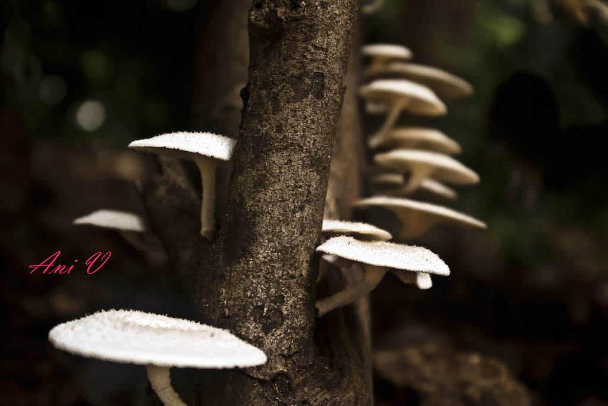

Tropical Rain Forests
The South Western Ghats moist deciduous forests is a tropical moist broadleaf forest ecoregion of southern India

Backwaters of Kerala
The Kerala backwaters are a network of brackish lagoons and lakes lying parallel to the Arabian Sea coast (known as the Malabar Coast) of Kerala state in southern India

Exploring Wild Life
Kerala housing exotic and rare species of flora and fauna